Exponent Functions and Logarithms¶
The above title sounds really boring, so I wonder how you ended up reading this thing. The mathematician inside may might find some of this interesting though.
This chapter assumes that you know derivatives.
Exponent Functions¶
The graph page contains some exponent and logarithm graphs, but calculating values for drawing them requires things like 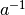 if 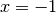. Turns out that 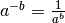. For example:
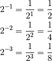
These results agree with the graphs because if  gets smaller, then also
gets smaller if 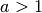.
gets smaller, then also
gets smaller if 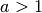.
The e constant¶
See Also
This video contains a different kind of introduction to with more facts but less details.
Let's try to find the derivative of where  is a constant and :
is a constant and :

Note that the only in what we ended up with is outside the lim, so the
entire lim thing is actually yet another constant. So, wouldn't it be handy if
the whole lim thing was just 1? Then 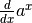 would be just .
Turns out that there's only one value that satisfies this, and
mathematicians call that number .
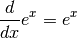
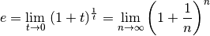
The  thing is really same as the
thing is really same as the  thing with 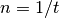. So if approaches
infinity, 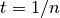 approaches 0 because dividing by a big number results in a
small number.
thing with 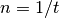. So if approaches
infinity, 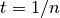 approaches 0 because dividing by a big number results in a
small number.
Let's make sure that the thing works with the derivative thing. It doesn't
matter how and our  relate to each other as long as they both go to 0, so
let's set
relate to each other as long as they both go to 0, so
let's set  and calculate the derivative:
and calculate the derivative:
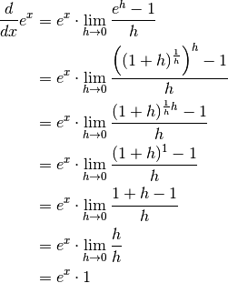
Let's also calculate an approximate value of and check the answer:
>>> n = 10000000000
>>> (1 + (1/n))**n
2.7182820532347876
>>> import math
>>> math.e
2.718281828459045
I think this is quite nice. We got this magic number out of pretty much nowhere. You'll be amazed by all the places where it occurs.
Many programming languages have an exp(x) function that returns , and
it's usually more precise than e.g. pow(e, x) or e**x, although the
difference is hardly noticable:
>>> math.exp(3)
20.085536923187668
>>> math.e**3
20.085536923187664
Logarithms¶
A logarithm is the inverse of an exponent. If 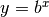, then 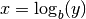. You
can also think of logarithms like  and 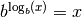. The
and 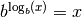. The
 is known as the base of the logarithm.
is known as the base of the logarithm.
The inversiness looks like this in graphs:
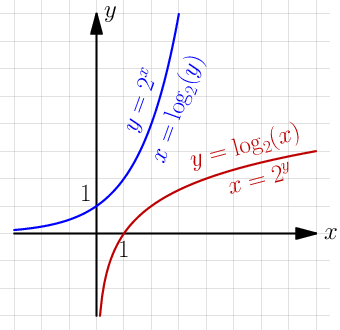
Note that the 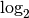 graph does not exist in the 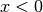 area because 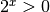
with any . You cannot take any logarithm of a zero or a negative value.
The base logarithm 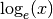 is often written as 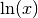. The n is short for "natural", and 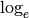 is called natural because it appears surprisingly often in all kinds of places because of the .
Many programming languages and calculators have a log(x) function, and
usually it returns , 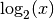 or 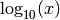. If you aren't sure
which logarithm it is, you can try it like this:
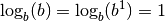
>>> import math
>>> math.log(2)
0.6931471805599453
>>> math.log(10)
2.302585092994046
>>> math.log(math.e)
1.0
Python's math.log(x) seems to return .
The summary page contains a bunch of formulas that make logarithms very useful. The proofs are below.
Use the 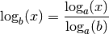 formula if your programming language doesn't have a logarithm that returns what you want:
function log4(x) {
// this works with any logarithm, so i don't even need to care about
// which logarithm Math.log is in javascript
return Math.log(x) / Math.log(4);
}
Most programming languages have a few different logarithm functions like e.g.
log2 and log10, and some allow specifying a base like math.log(x, 4)
in Python.
Logarithm Rule Proofs¶
If you don't like proofs then don't read these. The proofs are here just because I didn't feel like making a "More Logarithms" chapter just for them.
Here 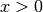, 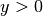, , 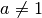, 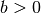 and 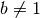. The proofs are ordered so that they don't use anything that hasn't been proved before them, but they use things that directly follow from the inversiness like .
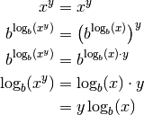
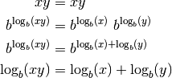
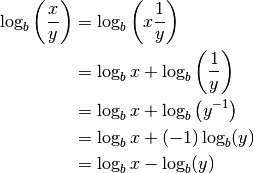
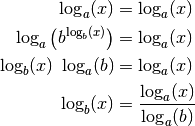
Derivative of any exponent function¶
Earlier we tried to find the derivative of where and we ended up with this:
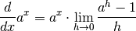
But now we know that 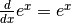 and we also know logarithms. Let's keep working on the derivative.
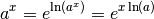
Here I used the 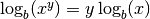 formula that we proved above. So it looks like we could do this (remember to use the chain rule):
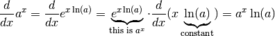
That's quite nice, but now we also have this:
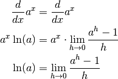
This is why the base logarithm is known as the natural logarithm, or for short. It appears "naturally" in surprising places.
Derivative of a logarithm¶
Let's try to find 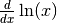 where . We'll use the 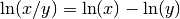 and 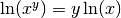 rules right to left.
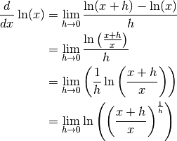
Now we'll apply the 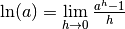
thing we ended up with last time. It doesn't matter how the in this thing
and the in our derivative thing relate to each other as long as they
both go to 0, so we need just one .
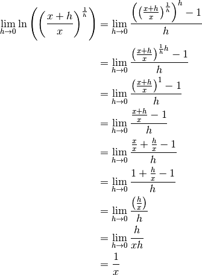
So we had these horrible messes but we ended up with just . I think this is nice.
Let's generalize this a bit with the rule:
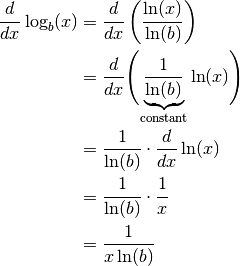
Again, the natural logarithm appears in a calculation that seems to have nothing to do with .